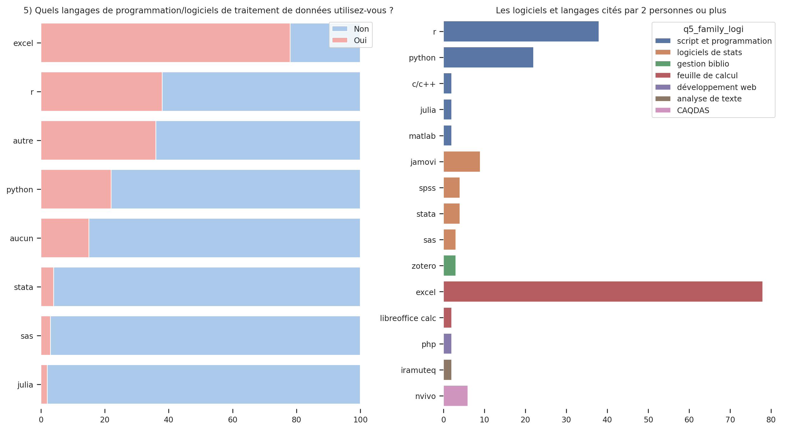
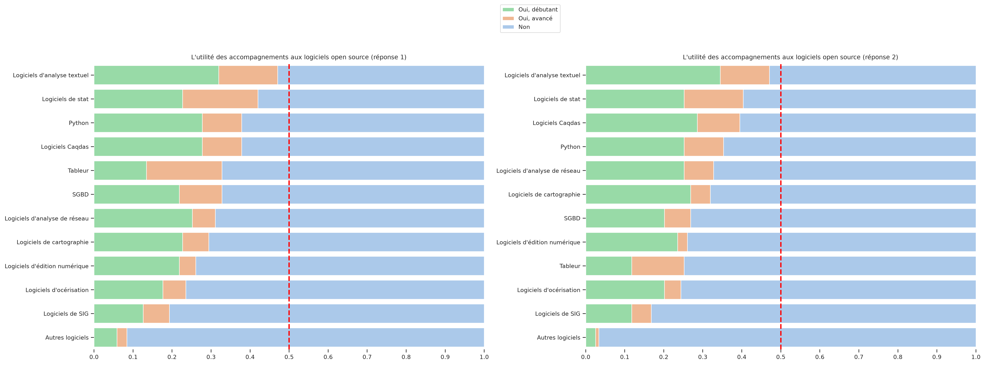
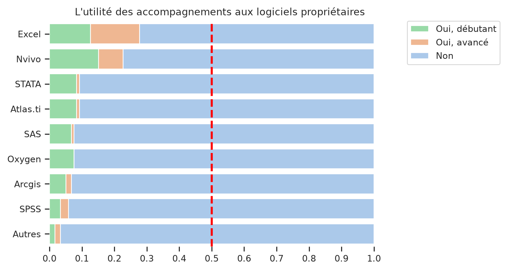
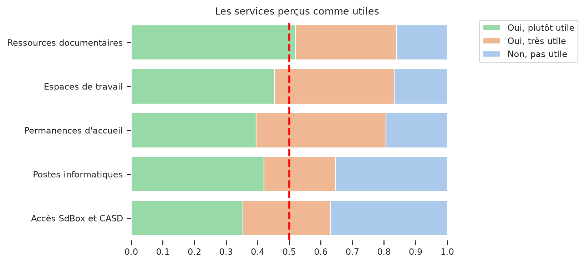

Production et analyse des données#
Types de données produites#
Les personnes interrogées travaillant exclusivement avec des données dites “quantitatives” sont minoritaires (Table 5), près de la moitié s’appuient essentiellement sur des données qualitatives et environ un tiers manipulent les deux types de données.
nb |
freq |
|
|---|---|---|
Des données qualitatives |
57 |
47,9 |
Des données quantitatives |
19 |
16,0 |
Les deux |
43 |
36,1 |
Total |
119 |
100,0 |
Les quatre types de données les plus fréquemment produites (Fig. 4)sont les entretiens, les données textuelles, les données d’enquête et les données expérimentales ou d’observation. On notera toutefois le caractère ambigü de certaines catégories. Ainsi la notion d‘“enquête” est largement utilisé en sciences sociales pour désigner la partie empirique des recherche et peut renvoyer aussi bien aux méthodes d’enquêtes ethnographiques qu’aux méthodes d’enquêtes par questionnaire. De même, les données d’observation peuvent se comprendre au sens de l’anthropologue qui observe les interactions au sein d’un groupe humain ou de l’ornithologue qui compte les espèces d’oiseau. Parmi les “autres types de données”, une personne a d’ailleurs précisé qu’il s’agissait d “observations in situ non expérimentales”. Tandis qu’une autre ne se reconnait pas dans la notion de “donnée”.

Fig. 4 Les types de données traitées#
Autres types de données#
Outils de traitement#
Le graphique ci-dessous (Fig. 5) donne à voir les logiciels qui sont cités par plus de deux répondants. Il regroupe les questions 5 et 5.1 sur les logiciels et langages utilisés pour le traitement des données. La question 5 proposait 6 outils : Excel, R, python, SAS, Stata et Julia. Pour chacun de ces outils, les personnes interrogées devaient répondre si elles les utilisaient ou non. Avec la question 5.1, elles pouvaient ensuite compléter leur réponse en donnant le nom d’autres outils informatiques. Les 36 personnes qui ont répondu à la question 5.1 ont ainsi cité 26 autres logiciels et langages, ce qui fait au total 48 outils informatiques différents. Pour faciliter la lecture, nous les avons regroupés par “familles”. On retrouve ainsi :
les “logiciels de statistiques” comme SPSS, Jamovi, Stata ;
les langages de “scripts et de programmations” comme R, Python, Matlab ou C++. Probablement qu’une subdivision de cette catégorie serait justifiée afin de distinguer les langages généralement employés pour l’analyse de données (R, Julia, Matlab, Python) et les langages de programmation comme C++ ;
les outils de gestion de bibliographie (Zotero, Endnote) ;
les logiciels de “tableurs” et les feuilles de calculs : Excel, Libre Calc ;
les langages liés au développement web (css, html, php, javascript) ;
les outils d’analyse textuelle (Iramuteq, ActiveTigger) ;
les “CAQDAS” (Computer-Assisted Qualitative Data Analysis Software) comme Nvivo, Qualcoder, Atlas.ti
En termes d’utilisateurs, Excel est l’outil le plus répendu. Deux tiers des répondants (N=79) y recourent pour traiter leurs données. Ce sont ensuite les langage R (N=38) et Python (N=23) qui sont les plus utilisés. Jamovi (N=9) est le plus cité des logiciels d’analyse statistique, comme Nvivo (N=6) pour les logiciels CAQDAS. On note par ailleurs qu’une peronne sur cinq dit n’utiliser aucun outil informatique pour traiter les données.

Fig. 5 Logiciels cités par plus de deux répondants#
Développement et dépôt de codes ou de logiciels#
Parallèlement à l’utilisation d’outils informatiques pour le traitement des données, près d’un quart des répondants ont déjà été amenés à développer ou faire développer du code ou des logiciels dans le cadre de leurs recherches, dont deux n’ont jamais déposé leur code ou logiciel sur un entrepot dédié.
Si le dépôt de code sur Github et Gitlab restent les solutions les plus usitées, 6 personnes déposent leus codes et logiciels ailleurs :
“Sur les dépôts SSC des commandes Stata”;
“sur des repositories personnels”;
“sur Hal”;
“sur Ortolang et Huma-Num”,
“Sur des instances auto-hébergées de Gitlab”
ou “sur l’INPI”.
Sur les 32 personnes ayant répondu “Oui” à la question “êtes-vous amené.e à développer ou faire développer des logiciels/du code spécialisé(s) ?”, 31 ont donnée des indications plus ou moins précises sur ce qu’elles développent ou font développer en répondant à la question 16 (Table 6). Nous avons analysé les réponses manuellement. On a ainsi 8 personnes qui disent développer des “logiciels variés”, des “algorithmes” ou encore des “plateformes, programmes logiciels, œuvres” sans données d’autres précisions. Les chercheurs qui manipulent du code afin de traiter et d’analyser les données constituent le groupe le plus importants (N=14). On observe enfin un petit groupe de personnes (N=7) construisant des outils liés à la collecte de données d’expérience via des jeux ou le logiciel Psytoolkit.
Type de développement |
nb |
total |
freq |
|---|---|---|---|
traitement et analyse de données |
15 |
31 |
48,4 |
programmes et logiciels variés |
8 |
31 |
25,8 |
collecte de données |
7 |
31 |
22,6 |
diffusion |
2 |
31 |
6,5 |
Accompagnements et formations méthodologiques#
Méthodes#
Outils#
Les questions concernant les besoins d’accompagnement à différents types de logiciels open source a été posé deux fois :
question 7, partie “Gestion et traitement des données”
la question 3 de la partie “Analyse des données”.
La comparaison des tris à plat montre que certaines personnes ont répondu différrement. La différence reste néanmoins marginale. Par exemple, la première fois que la question a été posée, 39 personnes ressentaient le besoin d’être accompagné pour utiliser un tableur contre 30 la seconde fois que la question a été posée (Table 7).
Tableur |
Réponse 1 |
Réponse 2 |
|---|---|---|
Non |
80 |
89 |
Oui, avancé |
23 |
16 |
Oui, débutant |
16 |
14 |
Total |
119 |
119 |
Dans l’ensemble, entre un quart et un tiers des répondants estime avoir besoin d’un accompagnement pour les différents logiciels cités (Fig. 6). Les quatre premier types de logiciel demandés sont :
les logiciels d’analyse textuelle. 48% des répondants disent ressentir le besoin d’un accompagnement (35% à un niveau débutant et 13% à un niveau avancé). À noter que les logiciels cités renvoient à des approches et des méthodes d’analyse différentes.
les logiciel d’analyse statistique (40%)
les logiciels d’analyse de données qualitatives comme Qualcoder (environ 37%)
le langage python (environ 35%)
Ensuite, on observe des demandes d’accompagnement pour les logiciels concernant des méthodes, des données ou des langages plus spécifiques comme les outils d’analyse de réseau de cartographie ou de gestion de bases de données. En bas de classement, nous trouvons enfin les logiciels d’océrisation et de système d’information géographique.
Dans le cas des besoins en accompagnement à la prise en main de logiciels propriétaires, 5 “familles” de logiciels étaient proposaient :
Les tableurs représentés par Excel
les logiciels de traitements statistiques comme SPSS, Stata, SAS
les logiciels de traitement des données textuelles avec Atlas.ti
les systèmes d’information géographique via ArcGis
les logiciels d’analyse des données qualitative (CAQDAS, Nvivo)
Le taux de personnes exprimant un besoin d’accompagnement est globablement plus faible que pour les outils open source. Excel est l’outil qui obtient le taux le plus élevé : environ 27% des personnes disent ressentir le besoin d’être accompagnées. On retrouve une proportion relativement similaire à celles des outils de tableur en open source. On constate par contre un écart de 20 personnes entre celles qui sont intéressées par un accompagnement aux logiciels CAQDAS open source et Nvivo (Table 8).

Fig. 6 Besoin d’accompagnement aux outils open source#

Fig. 7 Besoin d’accompagnement aux outils propriétaires#
Il semblerait donc que les chercheurs de Paris 8 sont d’avantage intéressés par des outils open source plutôt que propriétaires. Il faut toutefois rester prudent sur cette interprétation des écarts observés dans la mesure où ils peuvent être également lié à une fatigue des répondants, ces derniers choisissant “non” par facilité. Il est possible aussi que la question sur les logiciels open source apparaissent plus générale : en répondant “oui je ressens un besoin d’accompagnement à un logiciel d’analyse textuelle”, les personnes visent autant un outil en particulier que la méthode en elle-même (indépendamment du logiciel utilisé).
Une manière de valider l’idée d’une plus grande affinité des chercheurs de Paris 8 pour les logiciels libres serait de comparer ces résultats avec ceux du sondage de la DSIN sur le type de suite bureautique (microsoft, google, outils libres) péblicitée par le personnel de l’université.
Non, je ne ressens pas le besoin d’un accompagnement à un outil CAQDAS open source |
je ressens le besoin d’un accompagnement à un outil CAQDAS open source |
Total |
|
|---|---|---|---|
Non, je ne ressens pas le besoin d’un accompagnement à Nvivo |
66 |
26 |
92 |
Oui, je ressens le besoin d’un accompagnement à Nvivo |
6 |
21 |
27 |
Total |
72 |
47 |
119 |
Enfin, une dizaine répondants ont fait des suggestion d’outils open source ou propriétaires concernant lesquels ils aimeraient être formés. Ces outils s’inscrivent dans les différentes catégories proposées comme “tropy” (analyses de données qualitatives), jamovi (analyse statistique), les bases de données “orientées graphe” (système de gestion de base de données) ou des outils de traitement du son, des textes ou des images.
Autres logiciels open source |
Autres logiciels propriétaires |
|---|---|
logiciel d’analyse des gestes, de l’intonation etc. |
Qualtrics, Jamovi |
wikidata |
Photoshop |
Logiciel de reconnaissance de texte manuscrits type Transkribus |
Jamovi |
modèle linéaire mixte (LMM) |
|
Bases de données en graphe éventuellement |
|
Logiciel de traitement d’entretiens et de vidéos |
|
Anaconda (python), Tropes… |
|
Tropy |
Outils propriétaires#
Services à développer#
Enfin, les services à développer proposés dans le questionnaire ont rencontré un plébiscite dans la mesure où la majorité des personnes les considèrent comme utiles. Le service ayant le moins de succès concerne l’accès à une SD-Box et au CASD (Centre d’accès sécurisé aux données). Près de 63% le jugent utile contre 84% pour les ressources documentaires ou 80% pour les permanences d’accueil. Parmi les 44 personnes non-intéressées par ce dernier service (36%), il est possible qu’une partie d’entre elles ne connaissent pas les services du CASD et la “SD-Box”.
La SD-BOX “La SD-Box est le seul moyen d’accès à l’infrastructure centrale du CASD et à l’environnement de travail de l’utilisateur. C’est un dispositif technique conçu et mis au point par le CASD pour répondre aux besoins et contraintes des utilisateurs et déposants de données”.

Fig. 8 Les services à développer#
Par ailleurs, une quinzaine de personnes ont répondu à la question ouverte : “d’autres services vous paraitraient-ils utiles ?”. Plusieurs réponse portent sur les ressources documentaires de la bibliothèque qu’ils jugent “pauvres” au regard d’autre centres ou davantage orientées vers la formation que la recherche.
“Quand je parle de documentation je parle d’ouvrages pour la recherche la bibliothèque étant très loin d’être au niveau sur cet aspect même si elle a un bon.fonds pour la formation.”
“Il est certain que les ressources documentaires de la bibliothèque sont très pauvres en ce qui concerne la recherche et ne peuvent être utilisées, à mon sens, par des chercheurs d’aujourd’hui.”
Les autres commentaires portent sur l’accès à des bureaux nominatifs et équipés informatiquement, “la possibilité de créer des accès wifi pour les stagiaires et les nouveaux collègues dans un délai raisonnable”, le développement de services liés à la sécurité des données (accès à un serveur chiffré et des lieux de stockages sécurisés) ou de formation sur l’éthique de la recherche.
“une formation des chercheurs à des obligations/engagements éthiques ; le comité d’éthique de P8 est récent mais son existence est peu connu ;”